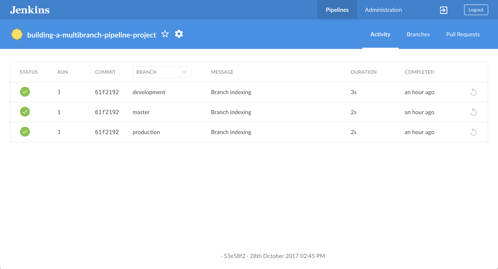
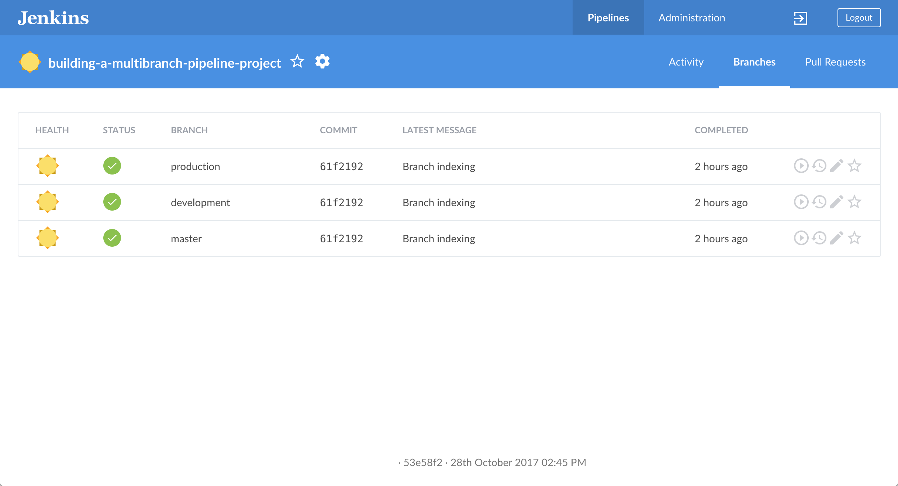
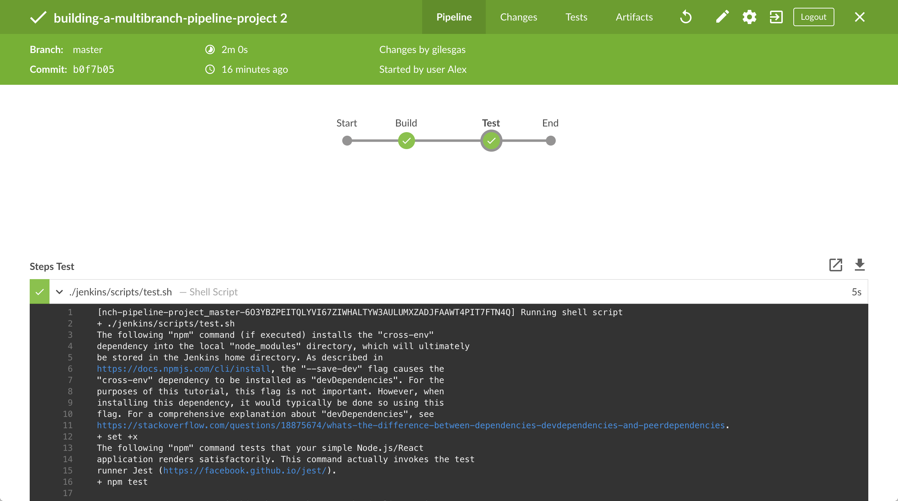
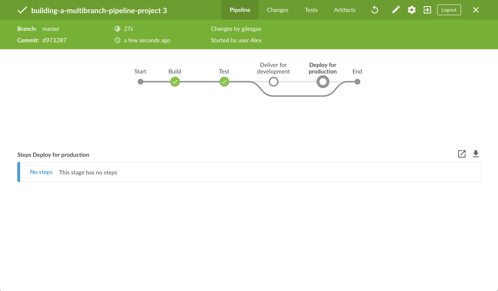
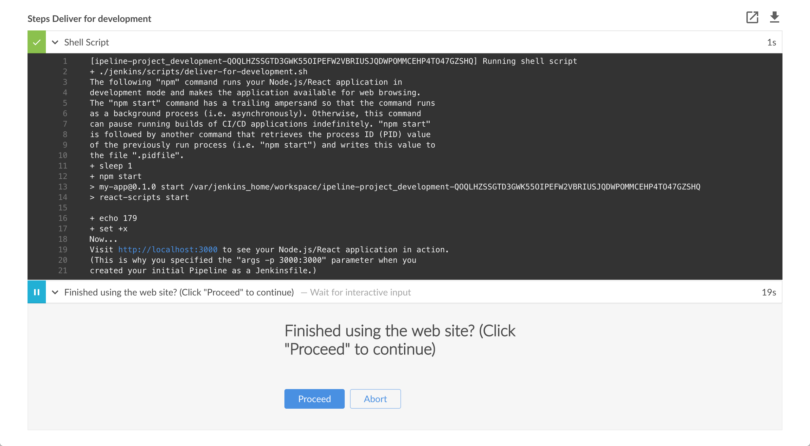
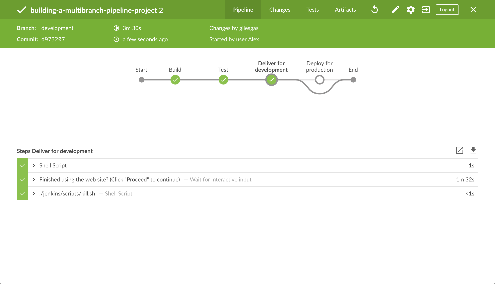
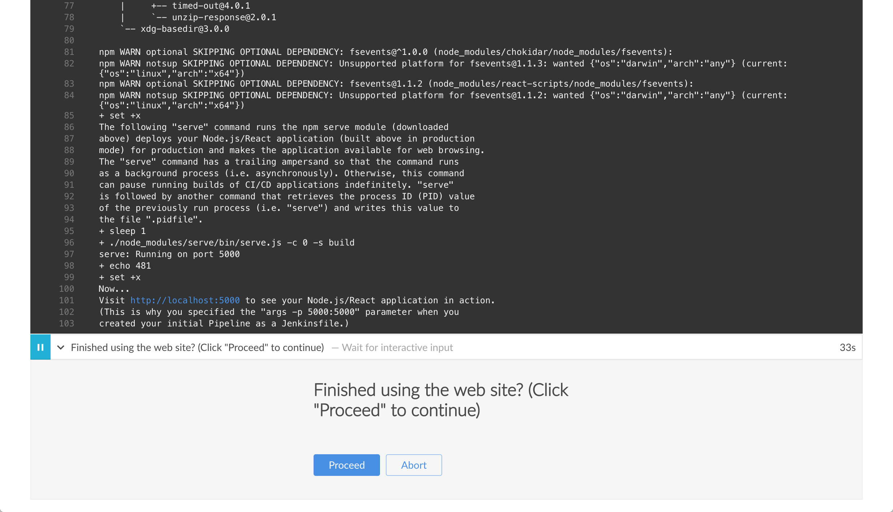
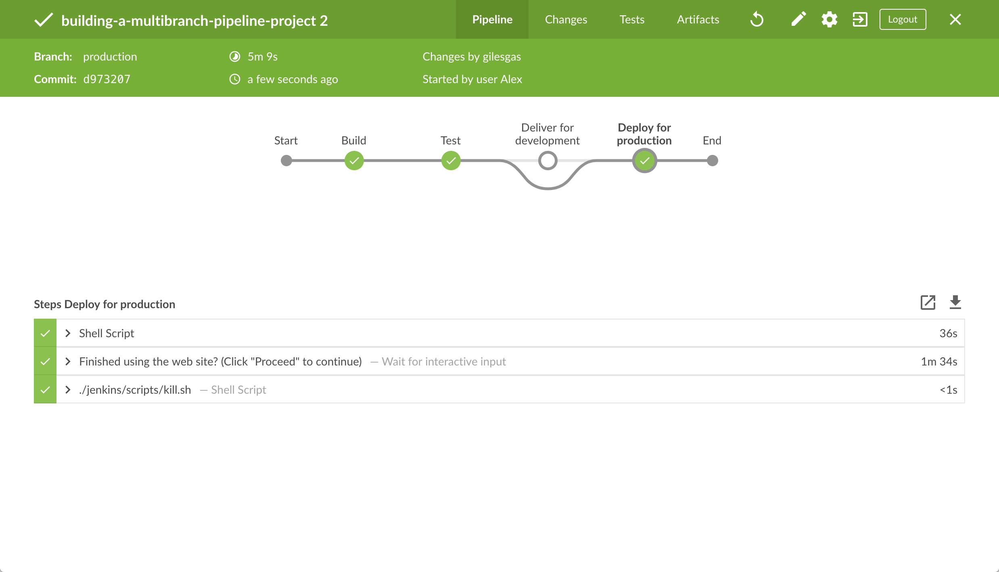

docker network create jenkinsEnd-to-End Multibranch Pipeline Project Creation
Table of Contents
- Prerequisites
- Run Jenkins in Docker
- Fork and clone the sample repository
- Create development and production branches in your repository
- Create your Pipeline project in Blue Ocean
- Create your initial Pipeline as a Jenkinsfile with build and test stages
- Add deliver and deploy stages to your Pipeline
- Pull your updated Jenkinsfile into the other repository branches
- Run your Pipeline on the development branch
- Run your Pipeline on the production branch
- Follow up (optional)
- Clearing the app from your browser
- Wrapping up
This tutorial shows you how to use Jenkins to orchestrate building and testing a simple Node.js and React application with the Node Package Manager (npm), as well as deliver different outcomes for development and production purposes.
Before starting this tutorial, it is recommended that you run through at least one of the initial set of Introductory tutorials from the Tutorials overview page first to familiarize yourself with CI/CD concepts (relevant to a technology stack you’re most familiar with), how these concepts are implemented in Jenkins and the fundamentals of Jenkins Pipelines.
In this tutorial, you’ll use the same application that the Build a Node.js and React app with npm tutorial is based on. Therefore, you’ll be building and testing the same application but this time, its delivery will be different depending on the Git branch that Jenkins builds from. That is, the branch being built determines which delivery stage of your Pipeline is executed.
Duration: This tutorial takes 30-50 minutes to complete (assuming you’ve already met the Prerequisites below). The exact duration will depend on the speed of your machine and whether or not you’ve already run Jenkins in Docker from another tutorial.
You can stop this tutorial at any point in time and continue from where you left off.
If you’ve already run though another tutorial, you can skip the Prerequisites and Run Jenkins in Docker sections below and proceed on to forking the sample repository. (Just ensure you have Git installed locally.) If you need to restart Jenkins, simply follow the restart instructions in Stopping and restarting Jenkins and then proceed on.
Prerequisites
For this tutorial, you will require:
-
A macOS, Linux or Windows machine with:
-
256 MB of RAM, although more than 2 GB is recommended.
-
10 GB of drive space for Jenkins and your Docker images and containers.
-
-
The following software installed:
-
Docker - Read more about installing Docker in the Installing Docker section of the Installing Jenkins page.
Note: If you use Linux, this tutorial assumes that you are not running Docker commands as the root user, but instead with a single user account that also has access to the other tools used throughout this tutorial. -
Git and optionally GitHub Desktop.
-
Run Jenkins in Docker
In this tutorial, you’ll be running Jenkins as a Docker container from the
jenkins/jenkins Docker
image.
To run Jenkins in Docker, follow the relevant instructions below for either macOS and Linux or Windows.
You can read more about Docker container and image concepts in the Docker section of the Installing Jenkins page.
On macOS and Linux
-
Open up a terminal window.
-
Create a bridge network in Docker using the following
docker network createcommand: -
In order to execute Docker commands inside Jenkins nodes, download and run the
docker:dindDocker image using the followingdocker runcommand:docker run \ --name jenkins-docker \(1) --rm \(2) --detach \(3) --privileged \(4) --network jenkins \(5) --network-alias docker \(6) --env DOCKER_TLS_CERTDIR=/certs \(7) --volume jenkins-docker-certs:/certs/client \(8) --volume jenkins-data:/var/jenkins_home \(9) --publish 2376:2376 \(10) --publish 3000:3000 --publish 5000:5000 \(11) docker:dind \(12) --storage-driver overlay2 (13)1 ( Optional ) Specifies the Docker container name to use for running the image. By default, Docker will generate a unique name for the container. 2 ( Optional ) Automatically removes the Docker container (the instance of the Docker image) when it is shut down. 3 ( Optional ) Runs the Docker container in the background. This instance can be stopped later by running docker stop jenkins-docker.4 Running Docker in Docker currently requires privileged access to function properly. This requirement may be relaxed with newer Linux kernel versions. 5 This corresponds with the network created in the earlier step. 6 Makes the Docker in Docker container available as the hostname dockerwithin thejenkinsnetwork.7 Enables the use of TLS in the Docker server. Due to the use of a privileged container, this is recommended, though it requires the use of the shared volume described below. This environment variable controls the root directory where Docker TLS certificates are managed. 8 Maps the /certs/clientdirectory inside the container to a Docker volume namedjenkins-docker-certsas created above.9 Maps the /var/jenkins_homedirectory inside the container to the Docker volume namedjenkins-data. This will allow for other Docker containers controlled by this Docker container’s Docker daemon to mount data from Jenkins.10 ( Optional ) Exposes the Docker daemon port on the host machine. This is useful for executing dockercommands on the host machine to control this inner Docker daemon.11 Exposes ports 3000 and 5000 from the docker in docker container, used by some of the tutorials. 12 The docker:dindimage itself. This image can be downloaded before running by using the command:docker image pull docker:dind.13 The storage driver for the Docker volume. See "Docker storage drivers" for supported options. Note: If copying and pasting the command snippet above does not work, try copying and pasting this annotation-free version here:
docker run --name jenkins-docker --rm --detach \ --privileged --network jenkins --network-alias docker \ --env DOCKER_TLS_CERTDIR=/certs \ --volume jenkins-docker-certs:/certs/client \ --volume jenkins-data:/var/jenkins_home \ --publish 3000:3000 --publish 5000:5000 --publish 2376:2376 \ docker:dind --storage-driver overlay2 -
Customise official Jenkins Docker image, by executing below two steps:
-
Create Dockerfile with the following content:
FROM jenkins/jenkins:2.375.1 USER root RUN apt-get update && apt-get install -y lsb-release RUN curl -fsSLo /usr/share/keyrings/docker-archive-keyring.asc \ https://download.docker.com/linux/debian/gpg RUN echo "deb [arch=$(dpkg --print-architecture) \ signed-by=/usr/share/keyrings/docker-archive-keyring.asc] \ https://download.docker.com/linux/debian \ $(lsb_release -cs) stable" > /etc/apt/sources.list.d/docker.list RUN apt-get update && apt-get install -y docker-ce-cli USER jenkins RUN jenkins-plugin-cli --plugins "blueocean docker-workflow" -
Build a new docker image from this Dockerfile and assign the image a meaningful name, e.g. "myjenkins-blueocean:2.375.1-1":
docker build -t myjenkins-blueocean:2.375.1-1 .Keep in mind that the process described above will automatically download the official Jenkins Docker image if this hasn’t been done before.
-
-
Run your own
myjenkins-blueocean:2.375.1-1image as a container in Docker using the followingdocker runcommand:docker run \ --name jenkins-blueocean \(1) --detach \(2) --network jenkins \(3) --env DOCKER_HOST=tcp://docker:2376 \(4) --env DOCKER_CERT_PATH=/certs/client \ --env DOCKER_TLS_VERIFY=1 \ --publish 8080:8080 \(5) --publish 50000:50000 \(6) --volume jenkins-data:/var/jenkins_home \(7) --volume jenkins-docker-certs:/certs/client:ro \(8) --volume "$HOME":/home \(9) --restart=on-failure \(10) --env JAVA_OPTS="-Dhudson.plugins.git.GitSCM.ALLOW_LOCAL_CHECKOUT=true" \(11) myjenkins-blueocean:2.375.1-1 (12)1 ( Optional ) Specifies the Docker container name for this instance of the Docker image. 2 ( Optional ) Runs the current container in the background (i.e. "detached" mode) and outputs the container ID. If you do not specify this option, then the running Docker log for this container is output in the terminal window. 3 Connects this container to the jenkinsnetwork defined in the earlier step. This makes the Docker daemon from the previous step available to this Jenkins container through the hostnamedocker.4 Specifies the environment variables used by docker,docker-compose, and other Docker tools to connect to the Docker daemon from the previous step.5 Maps (i.e. "publishes") port 8080 of the current container to port 8080 on the host machine. The first number represents the port on the host while the last represents the container’s port. Therefore, if you specified -p 49000:8080for this option, you would be accessing Jenkins on your host machine through port 49000.6 ( Optional ) Maps port 50000 of the current container to port 50000 on the host machine. This is only necessary if you have set up one or more inbound Jenkins agents on other machines, which in turn interact with your jenkins-blueoceancontainer (the Jenkins "controller"). Inbound Jenkins agents communicate with the Jenkins controller through TCP port 50000 by default. You can change this port number on your Jenkins controller through the Configure Global Security page. If you were to change the TCP port for inbound Jenkins agents of your Jenkins controller to 51000 (for example), then you would need to re-run Jenkins (via thisdocker run …command) and specify this "publish" option with something like--publish 52000:51000, where the last value matches this changed value on the Jenkins controller and the first value is the port number on the machine hosting the Jenkins controller. Inbound Jenkins agents communicate with the Jenkins controller on that port (52000 in this example). Note that WebSocket agents do not need this configuration.7 Maps the /var/jenkins_homedirectory in the container to the Docker volume with the namejenkins-data. Instead of mapping the/var/jenkins_homedirectory to a Docker volume, you could also map this directory to one on your machine’s local file system. For example, specifying the option
--volume $HOME/jenkins:/var/jenkins_homewould map the container’s/var/jenkins_homedirectory to thejenkinssubdirectory within the$HOMEdirectory on your local machine, which would typically be/Users/<your-username>/jenkinsor/home/<your-username>/jenkins. Note that if you change the source volume or directory for this, the volume from thedocker:dindcontainer above needs to be updated to match this.8 Maps the /certs/clientdirectory to the previously createdjenkins-docker-certsvolume. This makes the client TLS certificates needed to connect to the Docker daemon available in the path specified by theDOCKER_CERT_PATHenvironment variable.9 Maps the $HOMEdirectory on the host (i.e. your local) machine (usually the/Users/<your-username>directory) to the/homedirectory in the container. Used to access local changes to the tutorial repository.10 Configure the Docker container restart policy to restart on failure as described in the blog post. 11 Allow local checkout for the tutorial. See SECURITY-2478 for the reasons why this argument should not be used on a production installation. 12 The name of the Docker image, which you built in the previous step. Note: If copying and pasting the command snippet above does not work, try copying and pasting this annotation-free version here:
docker run --name jenkins-blueocean --detach \ --network jenkins --env DOCKER_HOST=tcp://docker:2376 \ --env DOCKER_CERT_PATH=/certs/client --env DOCKER_TLS_VERIFY=1 \ --publish 8080:8080 --publish 50000:50000 \ --volume jenkins-data:/var/jenkins_home \ --volume jenkins-docker-certs:/certs/client:ro \ --volume "$HOME":/home \ --restart=on-failure \ --env JAVA_OPTS="-Dhudson.plugins.git.GitSCM.ALLOW_LOCAL_CHECKOUT=true" \ myjenkins-blueocean:2.375.1-1 -
Proceed to the Post-installation setup wizard.
On Windows
The Jenkins project provides a Linux container image, not a Windows container image.
Be sure that your Docker for Windows installation is configured to run Linux Containers rather than Windows Containers.
See the Docker documentation for instructions to switch to Linux containers.
Once configured to run Linux Containers, the steps are:
-
Open up a command prompt window and similar to the macOS and Linux instructions above do the following:
-
Create a bridge network in Docker
docker network create jenkins -
Run a docker:dind Docker image
docker run --name jenkins-docker --detach ^ --privileged --network jenkins --network-alias docker ^ --env DOCKER_TLS_CERTDIR=/certs ^ --volume jenkins-docker-certs:/certs/client ^ --volume jenkins-data:/var/jenkins_home ^ --publish 3000:3000 --publish 5000:5000 --publish 2376:2376 ^ docker:dind -
Customise official Jenkins Docker image, by executing below two steps:
-
Create Dockerfile with the following content:
FROM jenkins/jenkins:2.375.1 USER root RUN apt-get update && apt-get install -y lsb-release RUN curl -fsSLo /usr/share/keyrings/docker-archive-keyring.asc \ https://download.docker.com/linux/debian/gpg RUN echo "deb [arch=$(dpkg --print-architecture) \ signed-by=/usr/share/keyrings/docker-archive-keyring.asc] \ https://download.docker.com/linux/debian \ $(lsb_release -cs) stable" > /etc/apt/sources.list.d/docker.list RUN apt-get update && apt-get install -y docker-ce-cli USER jenkins RUN jenkins-plugin-cli --plugins "blueocean docker-workflow" -
Build a new docker image from this Dockerfile and assign the image a meaningful name, e.g. "myjenkins-blueocean:2.375.1-1":
docker build -t myjenkins-blueocean:2.375.1-1 .Keep in mind that the process described above will automatically download the official Jenkins Docker image if this hasn’t been done before.
-
-
Run your own
myjenkins-blueocean:2.375.1-1image as a container in Docker using the followingdocker runcommand:docker run --name jenkins-blueocean --detach ^ --network jenkins --env DOCKER_HOST=tcp://docker:2376 ^ --env DOCKER_CERT_PATH=/certs/client --env DOCKER_TLS_VERIFY=1 ^ --volume jenkins-data:/var/jenkins_home ^ --volume jenkins-docker-certs:/certs/client:ro ^ --volume "%HOMEDRIVE%%HOMEPATH%":/home ^ --restart=on-failure ^ --env JAVA_OPTS="-Dhudson.plugins.git.GitSCM.ALLOW_LOCAL_CHECKOUT=true" ^ --publish 8080:8080 --publish 50000:50000 myjenkins-blueocean:2.375.1-1 -
Proceed to the Setup wizard.
Accessing the Docker container
If you have some experience with Docker and you wish or need to access your
Docker container through a terminal/command prompt using the
docker exec
command, you can add an option like --name jenkins-tutorial to the docker exec command.
That will access the Jenkins Docker container named "jenkins-tutorial".
This means you could access your docker container (through a separate
terminal/command prompt window) with a docker exec command like:
docker exec -it jenkins-blueocean bash
Accessing the Docker logs
There is a possibility you may need to access the Jenkins console log, for instance, when Unlocking Jenkins as part of the Post-installation setup wizard.
The Jenkins console log is easily accessible through the terminal/command
prompt window from which you executed the docker run … command.
In case if needed you can also access the Jenkins console log through the
Docker logs of
your container using the following command:
docker logs <docker-container-name>
Your <docker-container-name> can be obtained using the docker ps command.
Accessing the Jenkins home directory
There is a possibility you may need to access the Jenkins home directory, for
instance, to check the details of a Jenkins build in the workspace
subdirectory.
If you mapped the Jenkins home directory (/var/jenkins_home) to one on your
machine’s local file system (i.e. in the docker run … command
above), then you can access the
contents of this directory through your machine’s usual terminal/command prompt.
Otherwise, if you specified the --volume jenkins-data:/var/jenkins_home option in
the docker run … command, you can access the contents of the Jenkins home
directory through your container’s terminal/command prompt using the
docker container exec
command:
docker container exec -it <docker-container-name> bash
As mentioned above,
your <docker-container-name> can be obtained using the
docker container ls
command. If you specified the
--name jenkins-blueocean option in the docker container run …
command above (see also
Accessing the Jenkins/Blue
Ocean Docker container), you can simply use the docker container exec command:
docker container exec -it jenkins-blueocean bash
Setup wizard
Before you can access Jenkins, there are a few quick "one-off" steps you’ll need to perform.
Unlocking Jenkins
When you first access a new Jenkins instance, you are asked to unlock it using an automatically-generated password.
-
After the 2 sets of asterisks appear in the terminal/command prompt window, browse to
http://localhost:8080and wait until the Unlock Jenkins page appears.
-
Display the Jenkins console log with the command:
docker logs jenkins-blueocean -
From your terminal/command prompt window again, copy the automatically-generated alphanumeric password (between the 2 sets of asterisks).

-
On the Unlock Jenkins page, paste this password into the Administrator password field and click Continue.
Customizing Jenkins with plugins
After unlocking Jenkins, the Customize Jenkins page appears.
On this page, click Install suggested plugins.
The setup wizard shows the progression of Jenkins being configured and the suggested plugins being installed. This process may take a few minutes.
Creating the first administrator user
Finally, Jenkins asks you to create your first administrator user.
-
When the Create First Admin User page appears, specify your details in the respective fields and click Save and Finish.
-
When the Jenkins is ready page appears, click Start using Jenkins.
Notes:-
This page may indicate Jenkins is almost ready! instead and if so, click Restart.
-
If the page doesn’t automatically refresh after a minute, use your web browser to refresh the page manually.
-
-
If required, log in to Jenkins with the credentials of the user you just created and you’re ready to start using Jenkins!
Stopping and restarting Jenkins
Throughout the remainder of this tutorial, you can stop your Docker container by running:
docker stop jenkins-blueocean jenkins-dockerTo restart your Docker container:
-
Run the same
docker run …commands you ran for macOS, Linux or Windows above. -
Browse to
http://localhost:8080. -
Wait until the log in page appears and log in.
Fork and clone the sample repository
Obtain the simple "Welcome to React" Node.js and React application from GitHub, by forking the sample repository of the application’s source code into your own GitHub account and then cloning this fork locally.
-
Ensure you are signed in to your GitHub account. If you don’t yet have a GitHub account, sign up for a free one on the GitHub website.
-
Fork the
building-a-multibranch-pipeline-projecton GitHub into your local GitHub account. If you need help with this process, refer to the Fork A Repo documentation on the GitHub website for more information. -
Clone your forked
building-a-multibranch-pipeline-projectrepository (on GitHub) locally to your machine. To begin this process, do either of the following (where<your-username>is the name of your user account on your operating system):-
If you have the GitHub Desktop app installed on your machine:
-
In GitHub, click the green Clone or download button on your forked repository, then Open in Desktop.
-
In GitHub Desktop, before clicking Clone on the Clone a Repository dialog box, ensure Local Path for:
-
macOS is
/Users/<your-username>/Documents/GitHub/building-a-multibranch-pipeline-project -
Linux is
/home/<your-username>/GitHub/building-a-multibranch-pipeline-project -
Windows is
C:\Users\<your-username>\Documents\GitHub\building-a-multibranch-pipeline-project
-
-
-
Otherwise:
-
Open up a terminal/command line prompt and
cdto the appropriate directory on:-
macOS -
/Users/<your-username>/Documents/GitHub/ -
Linux -
/home/<your-username>/GitHub/ -
Windows -
C:\Users\<your-username>\Documents\GitHub\(although use a Git bash command line window as opposed to the usual Microsoft command prompt)
-
-
Run the following command to continue/complete cloning your forked repo:
git clone https://github.com/YOUR-GITHUB-ACCOUNT-NAME/building-a-multibranch-pipeline-project
whereYOUR-GITHUB-ACCOUNT-NAMEis the name of your GitHub account.
-
-
Create development and production branches in your repository
Before creating your Pipeline project in Jenkins, create "development" and
"production" branches of your locally cloned Git repository. You’ll be creating
a single Jenkinsfile (initially in the master branch, which you’ll pull into
the other branches) whose stages will be selectively executed based on the
branch that Jenkins is building from.
Within the building-a-multibranch-pipeline-project directory (i.e. your local
clone of the sample repository):
-
Run the following commands to create these branches (from the contents of the
masterbranch):-
git branch development
and -
git branch production
-
-
Check that these branches now exist by running the command
git branch, which should give you:development * master production -
If the asterisk (indicating the current branch) does not appear next to
master, run the commandgit checkout masterto ensure thatmasteris the current branch.
Create your Pipeline project in Blue Ocean
Whenever you create any Pipeline project in Blue Ocean, Jenkins actually creates this as a multibranch Pipeline project behind the scenes. This becomes apparent if you were to access Jenkins’s classic interface after creating a Pipeline project in Blue Ocean; you’ll see that Jenkins will have created your project as a "Multibranch Pipeline" project.
-
Go back to Jenkins and ensure you have accessed the Blue Ocean interface. To do this, make sure you:
-
have browsed to
http://localhost:8080/blueand are logged in
or -
have browsed to
http://localhost:8080/, are logged in and have clicked Open Blue Ocean on the left.
-
-
In the Welcome to Jenkins box at the center of the Blue Ocean interface, click Create a new Pipeline to begin the Pipeline creation wizard.
Note: If you don’t see this box, click New Pipeline at the top right. -
In Where do you store your code?, click Git (not GitHub).
-
In the Repository URL field (within Connect to a Git repository), specify the directory path of your locally cloned repository above, which is from your user account/home directory on your host machine, mapped to the
/homedirectory of the Jenkins container - i.e.-
For macOS -
/home/Documents/GitHub/building-a-multibranch-pipeline-project -
For Linux -
/home/GitHub/building-a-multibranch-pipeline-project -
For Windows -
/home/Documents/GitHub/building-a-multibranch-pipeline-project
-
-
Click Save to save your new Pipeline project.
Blue Ocean detects the presence of theJenkinsfile"Pipeline stub" in each branch and proceeds to run each Pipeline against its respective branch, whose build results are shown on the Activity page of the main Blue Ocean interface.
|
The Pipeline stub consists of the basic requirements for a valid Pipeline - i.e.
an The reason why the If you created a Pipeline project in Blue Ocean but didn’t have a Jenkinsfile in
one or more of your repository’s branches, then to access the branches in Blue
Ocean after subsequently pulling in/adding a
|
Create your initial Pipeline as a Jenkinsfile with build and test stages
You’re now ready to create the Pipeline that will automate building your Node.js
and React application in Jenkins. Your Pipeline will be created as a
Jenkinsfile, which will be committed to the master branch of your locally
cloned Git repository (building-a-multibranch-pipeline-project).
First, create an initial Pipeline to download a Node Docker image and run it as a Docker container that will build your simple Node.js and React application. Also add a "Build" stage to the Pipeline to begin orchestrating this whole process and a "Test" stage to check that the application renders satisfactorily.
-
Using your favorite text editor or IDE, open the existing
Jenkinsfileat the root of your localbuilding-a-multibranch-pipeline-projectGit repository and clear its contents.
Note: Be sure you are performing this step on themasterbranch of your repository. -
Copy the following Declarative Pipeline code and paste it into your empty
Jenkinsfile:pipeline { agent { docker { image 'node:lts-alpine' args '-p 3000:3000 -p 5000:5000' (1) } } environment { CI = 'true' } stages { stage('Build') { steps { sh 'npm install' } } stage('Test') { steps { sh './jenkins/scripts/test.sh' } } } }1 This argsparameter makes the Node container (temporarily) accessible through ports 3000 and 5000. The significance of this is explained in thejenkins/scripts/deliver-for-deployment.shandjenkins/scripts/deploy-for-production.shfiles of your cloned repository, and are covered in subsequent sections of this tutorial.Note: For an explanation of the other components of this
Jenkinsfile, refer to the annotations of the Declarative Pipeline in theCreate your initial Pipeline…''and Add a test stage…'' sections of the Build a Node.js and React app with npm tutorial. -
Save your edited
Jenkinsfileand commit it to your localbuilding-a-multibranch-pipeline-projectGit repository. E.g. Within thebuilding-a-multibranch-pipeline-projectdirectory, run the commands:
git stage .
then
git commit -m "Add initial Jenkinsfile with 'Test' stage" -
Go back to Jenkins again, log in again if necessary and ensure you’ve accessed Jenkins’s Blue Ocean interface.
-
Click Branches at the top right to access the list of your Pipeline project’s branches.

-
Click the run icon of the
masterbranch of your Pipeline project, then quickly click the OPEN link that appears briefly at the lower-right to see Jenkins building themasterbranch with the amendedJenkinsfile. If you weren’t able to click the OPEN link, click the top row on the Blue Ocean Activity page to access this feature.
Within a few minutes, the Blue Ocean interface turns green if Jenkins built your Node.js and React application successfully from yourmasterbranch.
-
Click the X at the top-right to return to the Activity page of the Blue Ocean interface.
Add deliver and deploy stages to your Pipeline
Next, add "Deliver for development" and "Deploy for production" stages to your Pipeline, which Jenkins will selectively execute based on the branch that Jenkins is building from.
This takes the "Pipeline-as-Code" concept to a new level, in which a single
Jenkinsfile describes your project’s entire build, test, delivery and
deployment processes in Jenkins for each branch of your repository. Read more
about Pipeline and what a Jenkinsfile is in the
Pipeline and Using
a Jenkinsfile sections of the User Handbook.
-
Go back to your text editor/IDE and ensure your
Jenkinsfileis open. -
Copy and paste the following Declarative Pipeline syntax immediately under the
Teststage of yourJenkinsfile:stage('Deliver for development') { when { branch 'development' } steps { sh './jenkins/scripts/deliver-for-development.sh' input message: 'Finished using the web site? (Click "Proceed" to continue)' sh './jenkins/scripts/kill.sh' } } stage('Deploy for production') { when { branch 'production' } steps { sh './jenkins/scripts/deploy-for-production.sh' input message: 'Finished using the web site? (Click "Proceed" to continue)' sh './jenkins/scripts/kill.sh' } }so that you end up with:
pipeline { agent { docker { image 'node:lts-alpine' args '-p 3000:3000 -p 5000:5000' } } environment { CI = 'true' } stages { stage('Build') { steps { sh 'npm install' } } stage('Test') { steps { sh './jenkins/scripts/test.sh' } } stage('Deliver for development') { when { branch 'development' (1) } steps { sh './jenkins/scripts/deliver-for-development.sh' input message: 'Finished using the web site? (Click "Proceed" to continue)' sh './jenkins/scripts/kill.sh' } } stage('Deploy for production') { when { branch 'production' (1) } steps { sh './jenkins/scripts/deploy-for-production.sh' input message: 'Finished using the web site? (Click "Proceed" to continue)' sh './jenkins/scripts/kill.sh' } } } }1 These whendirectives (along with theirbranchconditions) determine whether or not thestages(containing thesewhendirectives) should be executed. If abranchcondition’s value (i.e. pattern) matches the name of the branch that Jenkins is running the build from, then thestagethat contains thiswhenandbranchconstruct will be executed.Notes:
-
For an explanation of the
input messagesteps, refer to annotation 4 of the Declarative Pipeline at the ``Add a final deliver stage…'' section of the Build a Node.js and React app tutorial. -
For an explanation of the
deliver-for-development.sh,deploy-for-production.shandkill.shscript steps, refer to the contents of these files located in thejenkins/scriptsdirectory from the root of thebuilding-a-multibranch-pipeline-projectrepository.
-
-
Save your edited
Jenkinsfileand commit it to your localbuilding-a-multibranch-pipeline-projectGit repository. E.g. Within thebuilding-a-multibranch-pipeline-projectdirectory, run the commands:
git stage .
then
git commit -m "Add 'Deliver…' and 'Deploy…' stages" -
Go back to Jenkins again, log in again if necessary and ensure you’ve accessed Jenkins’s Blue Ocean interface.
-
Click Branches at the top right to access the list of your Pipeline project’s branches.
-
Click the run icon of the
masterbranch of your Pipeline project, then quickly click the OPEN link that appears briefly at the lower-right to see Jenkins building themasterbranch with the amendedJenkinsfile. If you weren’t able to click the OPEN link, click the top row on the Blue Ocean Activity page to access this feature.
Notice how Jenkins skips the last two stages you added, since the branch you are running the build from (master) does not meet thewhendirectives'branchconditions in these stages.
-
Click the X at the top-right to return to the Activity page of the Blue Ocean interface.
Pull your updated Jenkinsfile into the other repository branches
Now that you have a completed Jenkinsfile to build your application in
Jenkins, you can pull this file from the master branch of your local
repository into its development and production branches.
Within your local repository’s building-a-multibranch-pipeline-project
directory:
-
Run the following commands to pull changes from
mastertodevelopment:-
git checkout development
and -
git pull . master
-
-
Also run the following commands to pull changes from
mastertoproduction:-
git checkout production
and -
git pull . master
Your
developmentandproductionbranches should now have all yourJenkinsfileupdates you made on themasterbranch. -
Run your Pipeline on the development branch
-
Go back to Jenkins again, log in again if necessary and ensure you’ve accessed Jenkins’s Blue Ocean interface.
-
Click Branches at the top right to access the list of your Pipeline project’s branches.
-
Click the run icon of the
developmentbranch of your Pipeline project, then quickly click the OPEN link that appears briefly at the lower-right to see Jenkins building thedevelopmentbranch with the amendedJenkinsfile. If you weren’t able to click the OPEN link, click the top row on the Blue Ocean Activity page to access this feature. -
Within a few minutes and when the build pauses, ensure you are viewing the Deliver for development stage (click it if necessary), then click the top green Shell Script step to expand its contents and scroll down until you see the
http://localhost:3000link.
Note: Since you are building the application on a different branch, thenpm installstep will require a few minutes fornpmto download the many dependencies required to run your Node.js and React application (stored in a localnode_modulesdirectory within the Jenkins home directory). These dependencies are downloaded again because this Jenkins build would be the first time you are running your Pipeline project on thedevelopmentbranch and each branch has its own workspace directory (containing its ownnode_modulesdirectory) within the Jenkins home directory. -
Click the
http://localhost:3000link to view your Node.js and React application running in development mode (with thenpm startcommand) in a new web browser tab. You should see a page/site with the title Welcome to React on it. -
When you are finished viewing the page/site, click the Proceed button in Blue Ocean to complete the Pipeline’s execution.
The Blue Ocean interface turns green if Jenkins built your Node.js and React application successfully from yourdevelopmentbranch. Notice how the Deliver for development stage was executed but the Deploy for production stage was not.
-
Click the X at the top-right to return to the Activity page of the Blue Ocean interface.
Run your Pipeline on the production branch
-
Click Branches at the top right to access the list of your Pipeline project’s branches.
-
Click the run icon of the
productionbranch of your Pipeline project, then quickly click the OPEN link that appears briefly at the lower-right to see Jenkins building theproductionbranch with the amendedJenkinsfile. If you weren’t able to click the OPEN link, click the top row on the Blue Ocean Activity page to access this feature. -
Within a few minutes and when the build pauses, ensure you are viewing the Deploy for production stage (click it if necessary), then click the top green Shell Script step to expand its contents and scroll down until you see the
http://localhost:5000link.
-
Click the
http://localhost:5000link to view your Node.js and React application in a new web browser tab. This will be running in production mode from a production build of your source code (generated using thenpm run buildcommand). Again, you should see a page/site with the title Welcome to React on it. However, this time, the application’s contents are served by the npmservemodule and are also likely to continue running in the background in your browser. -
When you are finished viewing the page/site, click the Proceed button in Blue Ocean to complete the Pipeline’s execution.
The Blue Ocean interface turns green if Jenkins built your Node.js and React application successfully from yourproductionbranch. Notice how the Deploy for production stage was executed but the Deliver for development stage was skipped.
-
Click the X at the top-right to return to the Activity page of the Blue Ocean interface.
Note: Since your browser is likely to continue running the application’s content served by the npmservemodule, your browser will still show the content you viewed athttp://localhost:5000long after Jenkins has killed off theserveprocess. Read more about how to clear the application and its content from your browser below.
Follow up (optional)
This section takes you through a simulated development workflow using
Jenkins, whereby changes made to your application (i.e. the App.js source
file) can be examined from the development branch before they are deployed to
production (from the production branch) via the master branch.
-
Within your local repository’s
building-a-multibranch-pipeline-projectdirectory, run the commandgit checkout developmentto change to thedevelopmentbranch. -
Go back to your text editor/IDE and open the
App.jsfile in thesrcdirectory of your localbuilding-a-multibranch-pipeline-projectGit repository. -
Copy and paste the following HTML syntax immediately under the
To get started…line of yourApp.jsfile:<br/> This is a new line I added.so that you end up with:
import React, { Component } from 'react'; import logo from './logo.svg'; import './App.css'; class App extends Component { render() { return ( <div className="App"> <header className="App-header"> <img src={logo} className="App-logo" alt="logo" /> <h1 className="App-title">Welcome to React</h1> </header> <p className="App-intro"> To get started, edit <code>src/App.js</code> and save to reload. <br/> This is a new line I added. </p> </div> ); } } export default App; -
Save the edited
App.jsfile and commit it to your localbuilding-a-multibranch-pipeline-projectGit repository. E.g. Within thebuilding-a-multibranch-pipeline-projectdirectory, run the commands:
git stage .
then
git commit -m "Update 'App.js'" -
Back in Blue Ocean, run your Pipeline on the
developmentbranch (as you did above) and check the results throughhttp://localhost:3000to see your new line added. -
Assuming you’re happy with the change, then within your local repository’s
building-a-multibranch-pipeline-projectdirectory, run the following set of commands to pull your change into theproductionbranch (via themasterbranch):-
git checkout master
and -
git pull . development
then -
git checkout production
and -
git pull . master
-
-
Back in Blue Ocean, run your Pipeline on the
productionbranch this time (as you did above) and check the results throughhttp://localhost:5000to see your new line added.
Notes:-
Since your browser is likely to cache the contents of the npm
servemodule, you may need to refresh your browser page to see your change. -
In a real software development environment with small to large teams of people, pulling changes between branches is more likely to be conducted using pull requests on a cloud- or web-hosted Git service (such as GitHub or BitBucket).
-
Clearing the app from your browser
Your browser is likely to continue running your application’s content served by
the npm serve module, which means
that your browser will still show the content you viewed at
http://localhost:5000 long after Jenkins has killed off the serve process.
To clear the application and its content from your browser:
Wrapping up
Well done! You’ve just used Jenkins to build a multibranch Pipeline project with selectively run stages!
This tutorial demonstrated the power of using a single Jenkinsfile across
multiple branches of your repository to orchestrate different build and delivery
outcomes in Jenkins.
Because Jenkins is extremely extensible, it can be modified and configured to handle practically any aspect of build orchestration and automation.
To learn more about what Jenkins can do, check out:
-
The Tutorials overview page for other introductory tutorials.
-
The User Handbook for more detailed information about using Jenkins, such as Pipelines (in particular Pipeline syntax) and the Blue Ocean interface.
-
The Jenkins blog for the latest events, other tutorials and updates.
Please submit your feedback about this page through this quick form.
Alternatively, if you don't wish to complete the quick form, you can simply indicate if you found this page helpful?
See existing feedback here.